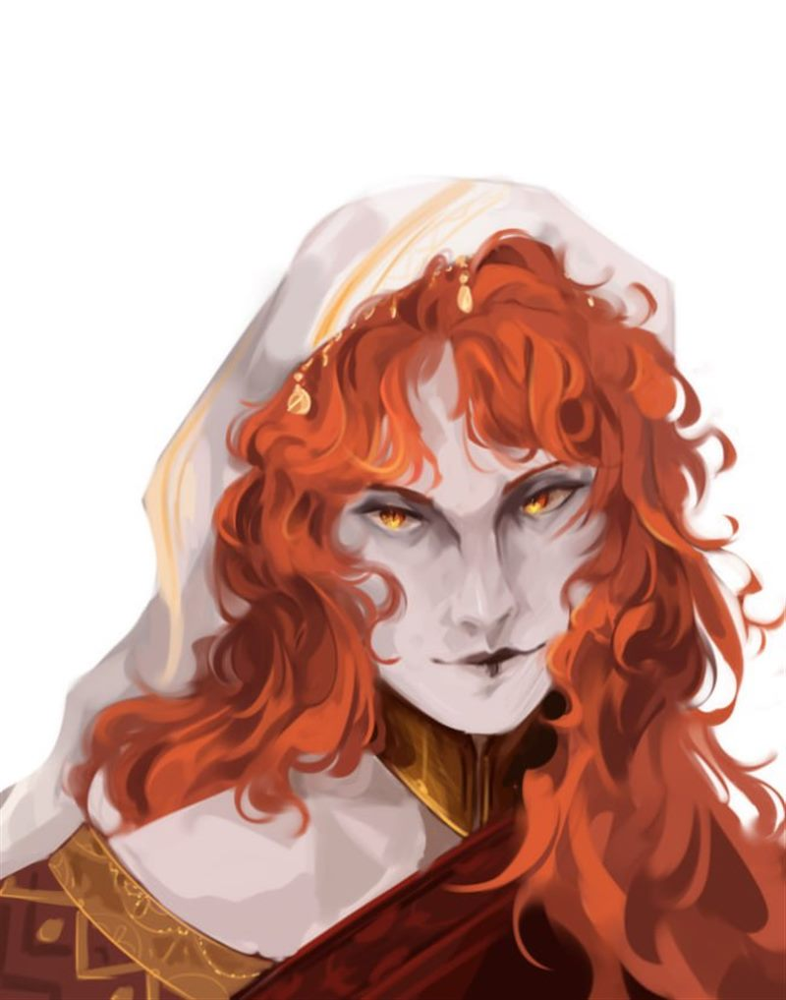

Зверолюди
Акрабимы

Происхождение и история
Гуманоидный скорпион, невысокий, светлокожий кочевой народ Аль'Ваэра. Когда-то у акрабимов, по их заверениям, было своё царство в дюнах Красных Песков — Золотой Улей, чьи купола сверкали, как хитиновые панцири. Однако сегодня оно разрушено, и большинство из них путешествуют по северной части Аль'Ваэра. Они кочуют по пустыням и городам, продавая найденные или созданные во время странствий диковинные безделушки.
Внешность
Они приходят с пением песков — стройные, с кожей цвета застывшего молока, чьи силуэты сливаются с дюнами. Их тела — гимн выживанию. У одних за спиной изгибаются хвосты, увенчанные жалом, острым как игла факира. У других — клешни, способные дробить камень или вырезать филигранные узоры. Глаза их, узкие и блестящие, видят тепловые следы даже в кромешной тьме. Когда они шевелятся, их хитиновые пластины шелестят, словно пересыпается песок в часах.
Характер и общество
Акрабимы более охотно общаются с другими народами, нежели иные кочевые племена. К ним относятся более лояльно, но всё равно не желают подолгу останавливаться в городах, считая их слишком тесными. Их терпят, даже уважают — но лишь до заката. Как только тени начинают ползти по стенам, акрабимы сворачивают лагерь. Каменные стены давят им грудные пластины, шум толпы режет усики, улавливающие малейший шёпот ветра.
Их повозки, гружённые странными артефактами, останавливаются у ворот городов: здесь продают светящиеся каменные цветы, флаконы с «дыханием дюн» — эссенцией, вызывающей видения прошлого, и браслеты из сплавленного песка.
Верования и обычаи
Приверженцы Старой религии. Старейшины племён до сих пор показывают детям карты, нарисованные на высушенных желудках гамальдов: «Вот здесь стоял Золотой Улей, наш дом». Молодёжь смеётся, считая это сказкой, но по ночам тайком копает песок, надеясь найти обломок легендарной «Песни Скорпиона» — арфы, игравшей голосами мёртвых царей.
Игровые особенности
Акрабимы разделяют несколько общих особенностей.
| Особенность | Описание |
|---|---|
| Увеличение характеристик | Значение вашей Харизмы увеличивается на 2, а значение Телосложения увеличивается на 1. |
| Возраст | Взрослеют как махребы и живут до 70 лет. |
| Размер | По росту и телосложению меньше махребы. Ваш размер — Средний. |
| Скорость | Ваша базовая скорость ходьбы составляет 30 футов. |
| Тёмное зрение | На расстоянии в 60 футов вы при тусклом освещении можете видеть так, как будто это яркое освещение, и в темноте так, как будло это тусклое освещение. В темноте вы не можете различать цвета, только оттенки серого. |
| Чувство вибрации | Вы можете воспринимать своё окружение в пределах 10 футов, полагаясь на чувство вибрации. |
| Чувствительность к солнечному свету | Вы совершаете с помехой броски атаки и проверки Мудрости (Восприятие), основанные на зрении, если вы, цель вашей атаки или изучаемый предмет расположены на прямом солнечном свете. |
| Иммунитет к яду акрабимов | Вы обладаете иммунитетом к урону ядом и состоянию отравленный, если этот яд акрабима. Вы кидаете с преимуществом спасброски телосложения от состояния отравления. |
| Парирование клешнями | Ваши хитиновые клешни позволяют иногда парировать атаки противника. Вы получаете +1 к КД, пока не носите тяжёлый доспех. |
| Языки | Вы можете говорить, читать и писать на акрабимском языке и ещё одном языке на ваш выбор. |
Выбор на 5-м уровне
На 5-м уровне вы можете выбрать одну из описанных ниже особенностей:
| Особенность | Описание |
|---|---|
| Ядовитый укол | Действием вы можете атаковать своим хвостом, нацелившись на одно существо, находящееся на расстоянии 5 футов от вас. Цель получает 2к10 урона ядом при попадании. Этот урон увеличивается на 1к10 на 11 (3к10) и 17 (4к10) уровнях. Вы можете использовать эту особенность количество раз, равное вашему модификатору Телосложения (минимум один раз). Вы восстанавливаете данную особенность после окончания продолжительного отдыха. |
| Клешни скорпиона | У вас есть две дополнительных клешни, которые растут вместе с вашими руками. Каждый из этих придатков является естественным оружием, которое вы можете использовать для совершения безоружной атаки. Если вы попадаете ими, то цель получает дробящий урон в размере 1к6 + ваш модификатор Силы. Сразу же после попадания вы можете попытаться схватить цель бонусным действием. Эти клешни не могут с чем-то взаимодействовать или держать оружие, магические предметы и другое специальное снаряжение. |
Хушиты
{kind=link}

Происхождение и история
Хушит (от «шипящий») — древний народ, по крайней мере с их слов. Они утратили все знания о своём народе и не нашли своего места по сей день. Их предки, говорят, ползали меж корней древних джунглей, когда Аль'Ваэр еще дышал влажным зноем, а не сухим огнём пустыни. Теперь они бродят меж городов, неся в котомках обломки пророчеств, которые сами не умеют прочесть.
Внешность
Не бывает двух одинаково выглядящих хушитов. Как змеиная, так и человеческая части тела демонстрируют большое разнообразие форм и раскрасок. Внешность передаётся по наследству, поэтому в небольших общинах хушиты будут выглядеть похоже, а в больших городах большее смешение даст более широкий диапазон.
Одни стелются по земле, их нижние тела — чешуйчатые спирали. Другие ходят на двух ногах, но с языками-раздвоенными молниями и глазами-щелями, в которых мерцает холодная мудрость удава. Их кожа — палитра пустыни после дождя: изумрудные полосы, охра с кровавыми прожилками, синева ядовитых цветов.
Характер и общество
Блуждающие фокусники, аскеты, прорицатели. Или же обычные шарлатаны, как думают большинство. Верить их пророчествам и словам о будущем зависит только от вас. Но что у них не отнять, так это спокойствие насчет всего, что их окружает: «Зачем тревожиться о том, что не можешь изменить?»
Чаще всего — нищие одиночки, выживающие благодаря хитрости и своим умениям. Их голоса — шипение раскаленного песка, они предпочитают имена с шипящими звуками.
Верования и обычаи
Нет единого верования. Либо же эти верования были утеряны. Одни шепчутся с песчаными бурями, называя их «дыханием Праматери». Другие поклоняются Звезде-Убийце — мифу о небесной змее, что когда-нибудь проглотит солнце. Но чаще их вера — это тихий смех в ответ на вопросы о богах.
Игровые особенности
Хушиты разделяют несколько общих особенностей.
| Особенность | Описание |
|---|---|
| Увеличение характеристик | Значение вашей Мудрости увеличивается на 2, а значение Харизмы увеличивается на 1. |
| Возраст | Хушиты имеют такую же продолжительность жизни, что и махребы. |
| Размер | Хушиты такого же размера, что и махребы. Ваш размер — Средний. |
| Тёмное зрение | На расстоянии в 60 футов вы при тусклом освещении можете видеть так, как будло это яркое освещение, и в темноте так, как будло это тусклое освещение. В темноте вы не можете различать цвета, только оттенки серого. |
| Инстинкты | Вы получаете владение двумя из перечисленных ниже навыков: Запугивание, Обман, Проницательность или Убеждение. |
| Прорицатели | Начиная с 3-го уровня, вы можете накладывать заклинание Сглаз с помощью этой особенности. Начиная с 5-го уровня, вы также можете накладывать заклинание Гадание с помощью этой особенности. После накладывания одного из этих заклинаний с помощью особенности вы должны закончить продолжительный отдых, прежде чем сможете вновь наложить это заклинание таким образом. Кроме того, вы знаете заговор волшебная рука. Волшебная рука, наложенная при помощи этой особенности, невидима. Базовой характеристикой для этих заклинаний является Мудрость. Заклинания не требуют материальных компонентов. |
| Языки | Вы можете говорить, читать и писать на Общем и двух языках на ваш выбор. |
Шуалы

Происхождение и история
Считается, что шуалы — это наследие территорий Аль'Ваэра, когда она ещё была зелёным и процветающим местом. Они приходят с песком на лапках и смехом, что звенит звонче монет. Шуалы — дети забытых оазисов, чьи предки бежали сквозь века, когда пустыня поглощала зелень.
Внешность
Их силуэты — будто мираж: низкие, гибкие, с ушами-опахалами, улавливающими шёпот ветра. Глаза-миндалины сверкают янтарём, а шерсть оттенка закатного песка украшена браслетами и бубенцами. Когда они двигаются, кажется, будто сама пустыня танцует — их хвосты с кисточками рисуют в воздухе узоры древних рун.
Характер и общество
Весёлый и загадочный народ, вокруг которого ходит немало мифов. Предпочитают сытое благополучие в городах. Полукочевники, путешествующие таборами от города к городу. Вместо сложной работы предпочитают песни, танцы и гадание, устраивая различные развлекательные представления.
Главу табора называют Баро — его взгляд тяжелее слитка золота. Он сидит на ковре, окружённый старейшинами. Мнение Баро не обсуждается. После Баро по важности идут другие мужчины-главы семейств и старейшины. Затем — старшие женщины, на которых ложится основная забота о заработке и пропитании. Самыми бесправными являются молодые холостяки, незамужние девушки и дети.
Все спорные моменты решает шуальский суд. Никто не взывает к властям городов — законы шуалов старше стен Ма-Халлама. Самым страшным наказанием считается изгнание из табора.
Верования и обычаи
Приверженцы Старой религии. Они верят, что их время не ушло. Пока пустыня помнит ритм их бубнов, шуалы остаются вечными странниками, что несут городам не товары, а отсветы забытого рая.
Игровые особенности
Шуалы разделяют несколько общих особенностей.
| Особенность | Описание |
|---|---|
| Увеличение характеристик | Значение вашей Ловкости увеличивается на 2, а значение Харизмы увеличивается на 1. |
| Возраст | Шуалы имеют такую же продолжительность жизни, что и махребы. |
| Размер | Шуалы в среднем примерно 3 фута (90 сантиметров) ростом и весят около 40 фунтов (18 килограмм). Ваш размер — Маленький. |
| Скорость | Ваша базовая скорость ходьбы составляет 25 футов. |
| Тёмное зрение | У вас есть острые кошачьи чувства. На расстоянии в 60 футов вы при тусклом освещении можете видеть так, как будло это яркое освещение, и в темноте так, как будло это тусклое освещение. В темноте вы не можете различать цвета, только оттенки серого. |
| Зрелищные прыжки | Каждый раз, когда вы совершаете прыжок в длину или высоту, вы можете бросить к8 и прибавить выпавшее число к количеству футов, которое вы можете преодолеть прыжком, даже если прыгаете с места. |
| Проворство шуалов | Вы можете проходить сквозь пространство, занятое существами, чей размер больше вашего. |
| Обаяние шуалов | Вы можете накладывать заклинание дружба с животными количество раз, равное бонусу мастерства. Начиная с 3-го уровня, вы также можете накладывать заклинание внушение с помощью этой особенности. После накладывания этого заклинания вы должны закончить продолжительный отдых, прежде чем сможете вновь наложить его таким образом. Также вы владеете заговором Фокусы. Базовой характеристикой для этих заклинаний является Харизма. |
| Языки | Вы можете говорить, читать и писать на Общем, шуальском и ещё одном языке на ваш выбор. |
Тосабеи
Происхождение и история
Никто не знает, откуда и когда появились племена тосабеев, потому что были они всегда. Считается, что тосабеи являются наследием территорий Аль'Ваэра, когда она ещё была зелёным и процветающим местом. Они выходят из дрожащего марева, словно ожившие монолиты забытой эпохи — ходячие памятники утраченного рая.
Внешность
Их силуэты — воплощение парадокса: мощь скалы, обтесанная ветром в изящный изгиб. Тосабеи — огромные гуманоидные саблерогие антилопы. Шкура цвета выжженной охры покрыта шрамами — летописями схваток с браконьерами и песками. Рога, изогнутые как серпы древних богов, длиннее ятаганов гази, отливают слоновой костью и сталью. Глаза, золотые как спелый финик, видят на мили сквозь песчаные бури, а копыта, ударяя о камень, высекают искры.
Характер и общество
Тосабеи — самые воинственные из кочевых племен, которые выбирают атаковать первыми, если выпадает возможность. Именно они зачастую делают набеги на плохо защищённые караваны Аль'Махребии. Их мир построен на ярости, выношенной веками. Каждый ребёнок тосабея учится держать копье раньше, чем ходить, ибо знает: его рога — не украшение, а мишень.
Их атака — танец смерти: прыжок выше верблюжьего горба, удар рогом, рассекающим сталь, рёв, от которого застывает кровь в жилах даже у дженази Огня.
Царство Женщин-Создательниц. В сердце племени правят не вожди, а Матери-Хранительницы. Их рога обвиты серебряными нитями — символ мудрости. Они распределяют воду, решают, когда кочевать, и хранят древние карты родников. Мужчины же — живое оружие. Их учат не сеять, а жечь, не строить, а крушить.
Верования и обычаи
Приверженцы Старой религии. Благословляют свои ноги и наносят на них татуировки. По ночам старейшины поют песни о лугах, где трава была сладкой, а реки пели колыбельные — Песнь Утраченных Трав.
Игровые особенности
Тосабеи разделяют несколько общих особенностей.
| Особенность | Описание |
|---|---|
| Увеличение характеристик | Значение вашей Силы увеличивается на 2, а значение Ловкости увеличивается на 1. |
| Возраст | Тосабеи имеют такую же продолжительность жизни, что и махребы. |
| Размер | Тосабеи немного больше махребов. Ваш размер — Средний. |
| Быстрые ноги | Ваша базовая скорость ходьбы составляет 35 футов. |
| Рога | Ваши рога — это естественное рукопашное оружие, которое вы можете использовать для нанесения безоружных ударов. Если вы атакуете ими, вы наносите колющий урон, равный 1к6 + ваш модификатор Силы, вместо дробящего урона, характерного для безоружного удара. |
| Пронзающий натиск | Сразу после того, как вы совершаете действие Рывок в свой ход и переместитесь по крайней мере на 20 футов, вы можете бонусным действием совершить одну рукопашную атаку вашими рогами. |
| Мощное телосложение | Вы считаетесь на один размер больше, когда определяется ваша грузоподъёмность и вес, который вы можете толкать, тянуть или поднимать. |
| Языки | Вы можете говорить, читать и писать на тосабейском и Общем. |
Яламы
Происхождение
Происхождение яламов теряется в тех же древних легендах, что и рождение чистокровных джагатаев. Говорят, что когда улуг-ханы смешивали свою кровь, чтобы создать послушный народ, часть выводков пошла «кривой линией» — примитивной, туповатой, но плодовитой и выносливой. Другие шепчут, что яламы — потомки тех, кто слишком долго скрещивался с болотными ящерами, утратив искру разума, но сохранив звериную силу.
Внешность
Яламы заметно мельче чистокровных джагатаев — ростом от 160 до 180 см, приземистые, с мощными короткими ногами и длинными цепкими руками. Чешуя у них тусклая, серо-зелёная или болотно-бурая, без благородного блеска. Морды более плоские, вытянутые, с мелкими частыми зубами, глаза маленькие, жёлтые, с вертикальным зрачком. Рогового гребня у большинства нет — только уродливые костяные наросты на затылке. Голосовые связки не приспособлены к членораздельной речи — они издают щелчки, шипение и гортанные выкрики.
Место в Орде
Яламы — низшая каста, бесправная масса, существующая лишь для обслуживания нужд чистокровных джагатаев и выполнения самой грязной работы. Они не считаются воинами в полном смысле слова — скорее расходным материалом.
Их роль в Орде многогранна и унизительна:
- Пастухи и погонщики. Яламы пасут бесчисленные табуны лошадей, отары овец и стада ящеров, перегоняют их с пастбища на пастбище, следят, чтобы скот не разбредался.
- Чернорабочие. Они таскают поклажу, ставят шатры, грузят повозки, чистят стойбища, разделывают туши. Любая тяжёлая физическая работа — их удел.
- Пушечное мясо. В битвах яламов гонят вперёд первой волной. Их задача — утомить врага, принять на себя стрелы и копья, истощить магию, чтобы чистокровные нукеры могли ударить в решающий момент. Из яламов никто не ждёт воинской доблести, только готовности умереть.
За провинности яламов бьют, клеймят, а непокорных убивают без суда. У них нет права голоса на советах, нет собственности, даже собственные семьи они могут создавать только с разрешения мурзы.
Быт и жилища
Яламы живут в самом грязном и тесном углу стойбища, в низких шатрах из плохо выделанных шкур, пропахших дымом и нечистотами. Спят вповалку на земле, едят отбросы с ханского стола и падаль. Ни о какой гигиене речи не идёт — они привычны к грязи и паразитам.
Однако у них есть и свои маленькие радости. Яламы любят греться на солнце, развалившись на камнях, возиться в пыли, драться друг с другом понарошку. Они привязчивы, как собаки, и если нукер проявит к ним хоть каплю заботы (не ударит, бросит лишнюю кость), будут преданы ему до смерти.
Верования
Религия яламов примитивна и смутна. Они не понимают сложных культов драконов и неба. Их вера — это вера в Великую Мать, огромную ящерицу, что живёт под землёй и рождает всех яламов. Когда кто-то умирает, его душа возвращается к Матери, чтобы родиться снова. Шаманов у них нет — есть старые самки, которые шепчут над костями и угадывают, где пройдёт завтра стадо.
Они также почитают огонь — не как символ, а просто потому, что огонь греет и отпугивает ночных хищников. У каждого шатра есть небольшой костерок, который яламы бережно поддерживают, веря, что в огне живут духи их предков.
Отношение к другим
- К джагатаям — страх и обожание. Чистокровные для них — почти боги, прекрасные и страшные. Ялам скорее умрёт, чем ослушается нукера.
- К рабам из людей, ярганов и прочих — враждебно-ревнивое. Рабы стоят выше их? Да как они смеют! Яламы не прочь поиздеваться над рабами, если видят, что нукеры не смотрят.
- К свободным ярганам — страх перед воинами, которые убивают драконов, и непонятная злоба.
- К остальным народам относятся с тупым равнодушием, пока те не лезут.
Имена
Имён у яламов, по сути, нет. Чистокровные дают им клички, обычно по какой-то примете или уродству. Между собой они перекликаются шипением и жестами.
Типичные клички: Шип, Гнилой Зуб, Кривой Коготь, Тупая Морда, Плесень, Чёрный Глаз, Хромой, Гнойник.
Яламы как персонажи
Игрок, желающий взять ялама, должен понимать, что его персонаж — изгой, сбежавший из Орды (или оставленный после разгрома). Он будет чужаком везде, куда ни придёт, вынужден скрывать свою природу или терпеть презрение и страх. Но в его груди бьётся сердце, способное на верность, и, возможно, именно среди «врагов» он впервые встретит отношение, похожее на доброту.
Особенности яламов
| Особенность | Описание |
|---|---|
| Увеличение характеристик | Значение вашей Силы увеличивается на 2, а значение Телосложения — на 1. |
| Возраст | Яламы взрослеют быстро, к 10–12 годам, и редко живут дольше 50–60 лет. |
| Размер | Рост от 160 до 180 см. Ваш размер — Средний. |
| Скорость | Ваша базовая скорость перемещения — 30 футов. |
| Тип существа | Вы являетесь гуманоидом (ящеролюдом). |
| Тёмное зрение | Вы привыкли к полумраку степных ночей и обладаете тёмным зрением в пределах 60 футов. |
| Примитивная речь | Вы можете говорить, читать и писать на Общем, но с трудом — ваш акцент ужасен, а сложные понятия вызывают затруднения. Вместо этого вы свободно общаетесь на языке джагатаев (понимаете, но говорите с трудом) и на примитивном наречии ящеролюдов (смесь шипения, жестов и щелчков). |
| Живучесть низшей касты | Вы привыкли к побоям, грязи и голоду. Вы получаете преимущество на спасброски от болезней и ядов. |
| Неприметность | Вы владеете навыком Скрытность (пригодится, чтобы прятаться от гнева нукеров). |
| Звериная стойкость | Когда вы не носите доспехов, ваш Класс Доспеха равен 12 + модификатор Ловкости (вы можете использовать щит). |
| Языки | Вы говорите, читаете и пишете на Общем (с большим трудом), а также понимаете Драконий, но не можете на нём говорить. Вы свободно общаетесь на примитивном наречии ящеролюдов, которое не имеет письменности. |